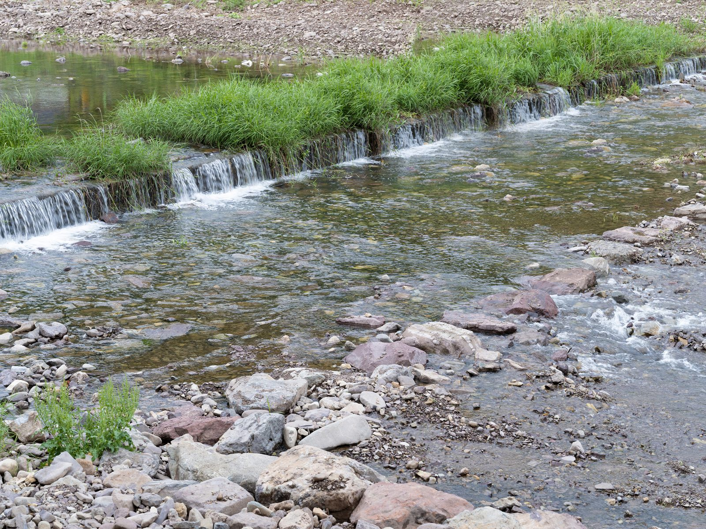
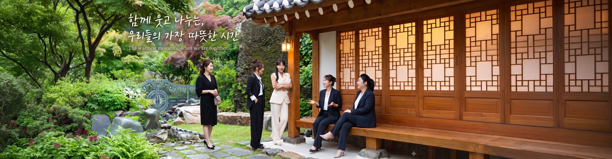

창원 야외 스냅 — 두 사람의 하루를 사진으로 남기는 방법
2026-10-20 발행
창원 야외 스냅은 스튜디오 사진과 다릅니다. 배경이 매번 달라지고, 빛이 움직이고, 사람이 걸어 다닙니다. 그래서 준비할 것이 조금 다릅니다. 오늘은 야외에서 두 사람을 찍을 때 무엇을 먼저 보는지 적어 보겠습니다.

스냅이라는 말은 원래 즉석에서 찍는다는 뜻입니다. 지금은 자연스러운 분위기의 야외 촬영을 통틀어 부릅니다. 정해진 포즈를 차례로 찍는 방식이 아니라, 걷고 웃고 이야기하는 사이를 찍습니다. 그래서 표정이 굳지 않습니다.
야외 촬영에서 가장 중요한 것은 시간입니다. 해가 높이 떠 있는 한낮에는 얼굴에 그림자가 강하게 내립니다. 그래서 오전 열 시 이전이나 오후 네 시 이후를 많이 권합니다. 빛이 비스듬히 들면 얼굴이 부드럽고, 배경도 깊어집니다.
창원 근교에는 야외 촬영지가 여럿 있습니다. 의령점 인근에는 궁류면 청정로에 있는 야외촬영장이 있어 한복과 드레스 촬영을 함께 하기에 좋습니다. 창원에서는 공원과 오래된 골목, 물가 쪽을 많이 씁니다. 이동 시간을 줄이면 촬영 시간이 늘어납니다.


동선은 짧게 잡습니다. 한 장소에서 오래 찍는 편이 여러 곳을 옮겨 다니는 것보다 결과가 좋습니다. 이동에는 시간이 들고, 옮기는 사이에 표정이 풀립니다. 두세 곳이면 충분하고, 그 안에서 걷고 서고 기대는 장면을 나눠 찍습니다.
옷은 두 사람이 같은 색 계열을 맞추면 사진이 정돈되어 보입니다. 완전히 같은 옷보다 톤을 맞추는 편이 낫습니다. 무늬가 큰 옷은 배경과 부딪히기 쉬워, 단색이나 작은 무늬를 권합니다. 신발은 실제로 걸어야 하니 편한 것을 신으시면 됩니다.

포즈는 준비해 오시지 않아도 됩니다. 저희가 이야기를 걸고, 그 반응을 찍습니다. 손을 잡고 걷기, 어깨에 기대기, 웃으면서 무슨 말인가 하기. 억지로 만든 포즈보다 그 순간의 표정이 오래 남습니다. 어색하면 어색한 대로 찍습니다.


야외에서는 표정보다 호흡이 중요합니다. 긴장하면 어깨가 올라가고 시선이 흔들립니다. 그래서 촬영 전에 십 분 정도 걸으면서 이야기합니다. 그 시간에 표정이 풀리고, 그다음 컷부터 사진이 달라집니다. 서두르지 않는 편이 결과가 좋습니다.

날씨는 미리 확인하시고, 흐린 날도 괜찮습니다. 흐린 날은 빛이 넓게 퍼져 그림자가 적습니다. 얼굴이 고르게 나오고 색이 차분합니다. 오히려 햇빛이 강한 날보다 편하게 찍히는 경우가 많습니다. 비만 피하시면 됩니다.
계절마다 찍히는 것이 다릅니다. 봄에는 꽃과 연두빛, 여름에는 짙은 녹음과 물빛, 가을에는 억새와 낙엽, 겨울에는 마른 나무와 긴 그림자입니다. 같은 장소라도 계절에 따라 사진이 완전히 달라집니다. 원하시는 분위기를 말씀해 주세요.

가족 야외사진은 아이의 속도에 맞춥니다. 아이는 기다리지 않습니다. 뛰게 두고 그 뒤를 따라가며 찍는 편이 좋은 컷이 나옵니다. 부모님은 그 모습을 바라보는 것만으로 사진이 됩니다. 야외 가족사진은 이렇게 찍습니다.
커플 스냅은 두 사람의 거리감이 중요합니다. 처음 만난 사이인지 오래된 사이인지에 따라 자연스러운 거리가 다릅니다. 무리해서 가까이 붙이지 않습니다. 편한 거리에서 시작해 조금씩 좁혀 갑니다. 그 편이 표정이 편합니다.
촬영 시간은 두 시간 안팎이면 충분합니다. 그 안에 이동과 휴식을 포함합니다. 길게 잡으면 지치고, 지치면 표정이 굳습니다. 짧고 집중해서 찍고, 마지막에 여유 있게 몇 컷을 더 찍는 구성이 좋습니다.

사진 수는 시간과 장소에 따라 달라집니다. 두 시간 기준으로 넉넉하게 찍고, 그중에서 고르시는 방식입니다. 전부 다 드리는 것이 아니라, 흔들린 컷과 눈 감은 컷을 걸러내고 보정한 사진을 전달합니다. 수치는 촬영 전 상담에서 정합니다.
보정은 피부와 색감을 중심으로 합니다. 얼굴을 바꾸는 보정은 하지 않습니다. 야외 사진은 빛과 배경이 이미 절반을 만들어 주기 때문에, 손대는 부분이 적을수록 자연스럽습니다. 원하시는 정도를 말씀해 주시면 맞춰 드립니다.
전달은 촬영 후 일정 기간 안에 드립니다. 원본 전체가 아니라 선별하고 보정한 사진이며, 인화나 액자를 원하시면 함께 준비합니다. 야외 사진은 액자에 담았을 때 분위기가 크게 달라지므로, 몇 장은 인화해 보시길 권합니다.
장소를 고를 때는 사람이 적은 쪽을 봅니다. 사람이 많으면 배경이 어수선하고, 지나가는 사람을 피하다 보면 촬영이 끊깁니다. 같은 공원이라도 사람이 몰리는 입구보다 안쪽 산책로가 낫습니다. 미리 걸어 보고 동선을 정합니다.
한복이나 드레스를 입고 야외로 나가는 경우에는 준비가 더 필요합니다. 바닥이 고르지 않으면 신발이 불편하고, 치맛자락이 젖을 수 있습니다. 그래서 의령 야외촬영장처럼 바닥이 정돈된 곳을 많이 씁니다. 야외 한복은 이 점이 중요합니다.
빛의 방향도 미리 봅니다. 해를 등지면 얼굴이 어둡고, 정면에서 받으면 눈이 부셔 표정이 찡그려집니다. 비스듬한 역광에 반사판을 세우는 방식이 가장 편합니다. 이 조정은 촬영 내내 조금씩 합니다.
사진을 고르실 때는 잘 나온 컷보다 오래 볼 컷을 고르세요. 야외 사진은 배경이 절반이라, 표정이 조금 어색해도 분위기가 좋으면 오래 남습니다. 인화했을 때를 상상하며 고르시면 선택이 쉬워집니다.
야외 촬영은 예약이 필요합니다. 주말과 가을 성수기는 일찍 마감되므로, 원하시는 날짜가 있으면 미리 연락 주세요. 날씨가 나빠지면 일정을 옮기거나 스튜디오로 바꿀 수 있습니다. 그 판단은 촬영 전날에 함께 합니다.
야외 사진을 남길 때 한 가지 더. 같은 자리에서 두 사람이 서로를 보는 컷을 꼭 찍습니다. 카메라를 보는 사진은 남에게 보여 주는 사진이고, 서로를 보는 사진은 두 사람이 간직하는 사진입니다. 그 한 컷이 오래 남습니다.
그래서 촬영이 끝나면 그날의 빛과 장소를 적어 둡니다. 몇 년 뒤 같은 자리에서 다시 찍고 싶다는 말씀을 하실 때, 그 기록이 도움이 됩니다. 사진은 한 장이지만 그 뒤에 하루가 있습니다.

야외 스냅은 준비가 많지 않습니다. 편한 신발, 톤을 맞춘 옷, 그리고 시간 약속. 나머지는 그날의 빛과 두 사람의 표정이 채웁니다. 창원과 의령에서 찍은 기록이 궁금하시면 상남동 롯데빌딩 2층으로 오시면 됩니다. 조금 더 걸으시면 더 좋은 자리가 나옵니다.
자주 묻는 질문
Q. 야외 촬영은 어디서 하나요?
A. 창원 근교 공원과 골목, 물가 쪽을 주로 이용하고, 의령점 인근 야외촬영장도 함께 씁니다. 이동 시간을 줄이기 위해 두세 곳 안에서 촬영합니다.
Q. 옷은 어떻게 준비하면 좋나요?
A. 두 분이 같은 색 계열로 톤을 맞추시면 좋습니다. 큰 무늬보다 단색이나 작은 무늬를 권하고, 신발은 편한 것을 신으시면 됩니다.
Q. 사진은 몇 장 받을 수 있나요?
A. 촬영 시간과 장소에 따라 달라집니다. 흔들린 컷을 걸러내고 보정한 사진을 전달드리며, 정확한 수량은 상담에서 정합니다.

오시는 곳
사랑이야기창원점
- 주소 경남 창원시 성산구 원이대로 652, 상남동 롯데빌딩 2층
- 전화 055-287-8022
- 영업시간 오전 10:00 ~ 오후 7:00
- 예약 전화 상담 · 카카오톡 채널
- 주차 건물 지하 주차장
김작가사진이야기 의령
- 주소 경남 의령군 궁류면 청정로 1188
- 전화 055-574-3706
- 영업시간 오전 10:00 ~ 오후 7:00
- 예약 전화 상담 · 카카오톡 채널
- 주차 전용 주차장
이 글에 한마디
댓글창을 준비하고 있습니다. 그동안 궁금한 점은 카카오채널로 남겨 주시면 바로 답변드립니다.
카카오채널로 한마디 남기기